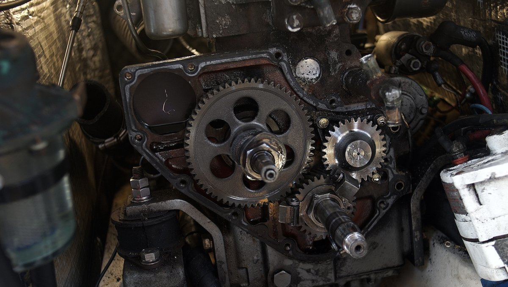
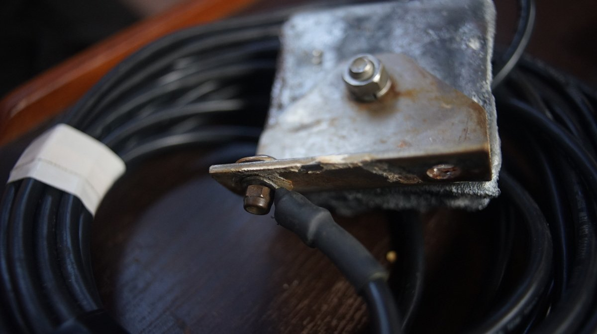

costs
maintenance
Doing maintenance and repairs yourself will bring the cost down. Offloading work to professionals if you can afford it is fine, but it's good to know how to take care of your boat. You may not always have access to workers if sailing to far-flung islands.
A failure to maintain items regularly will cost more later. We recommend keeping a log of the repairs, part replacements that is done to your boat. Many parts have a limited lifespan, so knowing when they were replaced last will help prevent breakages. If leaving for a big sailing trip with spares, install the spare and keep the other one as the spare. If you do this, you'll learn how to change the part and what tools you need to do the job.
Maintenance checklist:
- Engine(s)
- The boat’s hull (bottom) & topsides
- Electrical systems
- Plumbing
- Moving parts (hinges, tracks and zippers)
- Canvas and upholstery
When doing repairs, use quality materials and products, research them thoroughly before a project instead of relying on brand names.
Some years will cost more than others as gear wears out.
Hauling-out costs

Tasks like hauling-out (to get the bottom painted) is once every 2-3 years for an offshore boat, but can be every year otherwise. How often you haul out depends on your personal preference.
Yard fees vary from place to place, those closer to large cities will cost more. In New Zealand, it cost us NZD$420 total, including bottom rinse, haul in and out and days to stay on the hard. While in Japan, it was about double that price for half the time.
When out of the water, don't forget to...
- Check your cutlass bearing (push up on the prop to see if there is any play, there shouldn't be).
- Grease the inside of your prop.
- Replace the shaft zincs.
- Replace or service your shaft seal. Dripless types need to be replaced out of the water, because it is necessary to undo the engine coupling to pull back the shaft to remove, and insert a new bellow.
- Check the hull for blisters.
Paint
Bottom paint: If we want to wait longer between haul-outs we paint 3 coats, otherwise 1 every year. We use ablative anti-fouling which costs about ~$250 to paint a 10 m yacht. Ablative wears out over time and when it does it will become less effective at repelling sea critters. Eventually, stripping the bottom of all paint down to the gelcoat is necessary, paint can build up and the older layers will start to flake off, making it difficult for new paint to adhere to the bottom.
Shaft, strut and prop: Coating your prop, shaft and strut with PropSpeed (see image below) works well to keep growth off, it works well in high-growth areas (we used it in New Zealand and Japan) but it is very expensive.
There is also the option of zinc paint. If your boat comes out of the water for a haul-out every year, a cheap alternative is to coat metal with zinc cream(penanten) or anhydrous lanolin (reported by others). Both products are available at the pharmacy. In June 2021 we tried zinc cream, we'll report back on our findings.

Offshore sailing costs
Traveling offshore means more wear because the boat is under more stress. Repair and maintenance can cost between $500-800 per year for a 10 m yacht like ours. This price goes up and down depending on where we go, and what has to be replaced that year. The size of the boat has a big influence on the cost of things. Larger boats need thicker, stronger hardware, rigging etc.
In 2018 while in new zealand, we spent around $10k on Pino (see projects and pain) to get it ready for japan and the subsequent trip across the north pacific ocean. This was the most we'd spent in a year and was due to the purchase of a new ais system, mainsail, throttle cables, window replacement, saloon hatch, galley plumbing, replacement batteries and solar panels. We did most of the work ourselves, all except for the mainsail. Our first year was also expensive, because the boat was not outfitted for sailing offshore, we had to buy life jackets, jacklines, a drogue, extra lines, shackles, a medical kit, extra tools, a location device, a handheld VHF, a PLB, a satellite phone, foul-weather gear, engine spares etc. We wrote an offshore checklist to find out what you may need to buy.
Engine costs
Engines require spare parts like oil ($25) and fuel filters ($10), they should be replaced 250 hours (300 hours on some models) or once per year, whichever is sooner. Our engine has two fuel filters, a secondary and primary. Other items that need to be replaced periodically include: water pump impellers ($40), water pump and alternator belt (15-$20), zincs (inside engine, $8 each), coolant (if fresh water cooled) shaft zinc ($16 each) etc. Buying the official part for the engine will always cost more. Depending on the item, finding an equivalent from another maker is tricky. For an alternator belt, measure the outer an inner diameter, the width at the top and at the base and visit an automotive store.
See our resources for a list of helpful manuals on maintenance. Always carry the physical manual for your engine.
Zincs
To keep your shaft and prop safe, replace your zincs before they deteriorate. To ensure the anode stays put apply a coating of Tef-Gel or nail polish to the SS bolt that passes through the anode, and over the surface where the bolt passes through. Applying an insulating compound galvanically isolates the SS bolt(or machine screw) from the anodic metal.
If connected to shore power in a marina, use a hanging zinc(ours pictured above) to further protect your anodes. A hanging zinc is attached to a vessel’s engine block, and hung overboard into the water. Your hanging Zinc must be electrically connected to your shaft zinc to work.
It's possible to buy them ready made, or to make them on the cheap. While in the boatyard look for a bin where people get rid of their old zincs, usually near oil/metal disposal sites. Bond an insulated wire (SS or copper) to the zinc, and run the wire through the boat and onto the engine block. Run another rope to keep the pressure off the wire when hanging the zinc overboard. Some people run the wire through a stanchion bolt, with another wire under deck connected to that same bolt that goes to the engine (ours goes through an aft dorade). When underway, don't forget to pull it up!
Wood upkeep costs
Most boats have teak rails or accessories, or marine plywood(interior). Teak does not rot, but it is a very expensive and an increasingly rare material. We don't recommend buying new exotic hardwoods, even if they last longer, because they often come from endangered forests. In all cases, using reclaimed hardwoods is the best thing to do. When boats are too old, they're stripped for parts and are a good source of used hard woods.
Most interior wood ought to be treated—especially marine plywood—so they don't absorb moisture. Marine ply is usually pre-treated to prevent the wood from rot and decay, but the wood still needs to be sealed. All boats suffer leaks eventually, and so it is necessary to take steps to protect the wood to make it last. If replacing a wall, coat the wood with multiple layers of epoxy(on the seam too) before applying multiple coats of varnish for UV protection.

A liter of resin can cost 30-40$, and harder is about 50-74$ per liter(although sizes tend to be much smaller. UV-resistant varnish can cost 40-80$ per liter, depending on the producer.
moorage
Living at anchor, that is, in a bay somewhere tethered to the earth with ground tackle is free. Some bays will have moorings installed that you can tie to for a small fee (often around $10-15 per day). Living at anchor is the cheap way to go, although getting a good anchor and rode is important as it will keep your boat safe.

Marinas often have guest docks with power, WiFi and showers, for a medium-to-high cost ($300-$800.) The longer the boat though, the bigger the cost. Some marinas charge per dock space rather than boat size, beware of these places. Moorage near cities is more expensive, and the price goes up during the high season (summer). Winter moorage is generally much cheaper.
Paying for annual moorage is a good idea, but keeping a boat in a marina means getting liability insurance, which in turn, means you'll need a survey, resulting in a seemingly interminable domino effect which can incur many more costs. Depending on the age of your boat, and when it was last surveyed (if ever), you may need a full condition out-of-water survey. This means paying a marina to lift your boat out, and paying the surveyor. A surveyor will point out mandatory items that need fixing and/or replacing, if these items are not complied with within 60 days the insurance will be void.
Living aboard your boat will cause wear from regular use of the space. If staying at a marina in your home country for long periods, paying for liveaboard fees (up to $150 extra per month) is necessary. If staying in a marina in a foreign country, liveaboard fees are often waived. Some marinas charge for electricity and water, be sure to take that into account, especially if you have plans to winter there and that your heating is electric. In winter, marinas charge less than in the high season. A marina that charges 900$ per month in the summer can charge 500$ in the winter.
safety_gear
He who lets the sea lull him into a sense of security is in very grave danger. — Hammond Ines
Things can happen, even on a calm ocean, so it is necessary to be alert and to not underestimate the water's strength and unpredictability. Never be complacent, and don't trust the sea. Wear a life jacket (with sailing harness) and tether (especially when night sailing). Safety gear with auto-inflating systems need to be inspected often, and you must carry spares.
Safety gear will last you many years if serviced regularly. Pyrotechnic signaling devices (including aerial flares and hand held signals) expire 42 months after the date of manufacture in accordance with the Coast Guard requirements. Typically, this means that you must replace your flares every three boating seasons. Aerial flares cost $75 per pack of 6 (in Canada), for a boat our size (10 m) we need to have 12 aboard.
Life jackets and life rafts need to be serviced every 3 years, as the auto-inflating canisters need testing, and replacing. Replacement cartridges for auto-inflating PFDs cost about $35 (again, in Canada). If planning to travel for many years out of the country, carry replacement cartridges onboard, because other countries may not carry the ones required by your model and that replacements can't be shipped by air (they're pressurized). Re-packing a liferaft is very expensive, and varies depending on the model, and your location in the world.
Life jackets that are not auto-inflating are fine, but must have a sailing harness to which you can clip a short tether. If the tether is short enough, you won't fall overboard and won't require extra flotation. Floating life jackets that are non-inflating are bulky, and may make it difficult, or uncomfortable to sail in. Wearing a short tether that keeps you to the boat, and prevents you from falling too far overboard is your best security. We recommend a short tether with two clips, so you can clip to another point on the boat while always being clipped on elsewhere.
Run jacklines along the deck, from bow to stern cleats, and keep them within the standing rigging. Make sure the jacklines are flat, and brightly colorful so as to be visible at night. Rope jacklines can trip you up. An even better option for jacklines, is to keep them running as close to the center of the boat as possible, so that there is no chance of falling overboard when attached. Jacklines have to be made from a strong, UV resistant material, you can buy them, but we had ours made.

Every boat should have a ditch bag, that is, a bag filled with emergency supplies in case the boat needs to be abandoned. The bag should have a handheld vhf, spare batteries, noise-producing device, flashlight, water, food (energy dense), charts, sextant, ibuprofen, sunscreen, lighter, medical kit, fish line, fish hooks, mirror, compass, duct tape, flare gun, emergency blanket, etc.